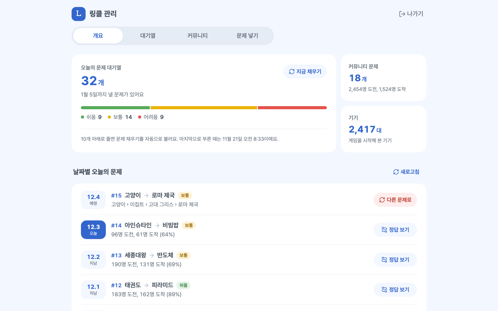
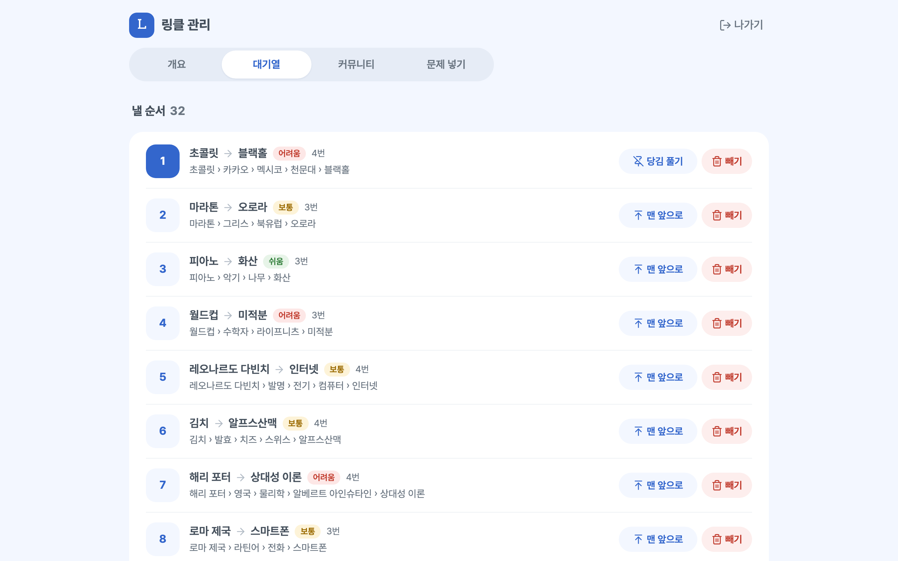
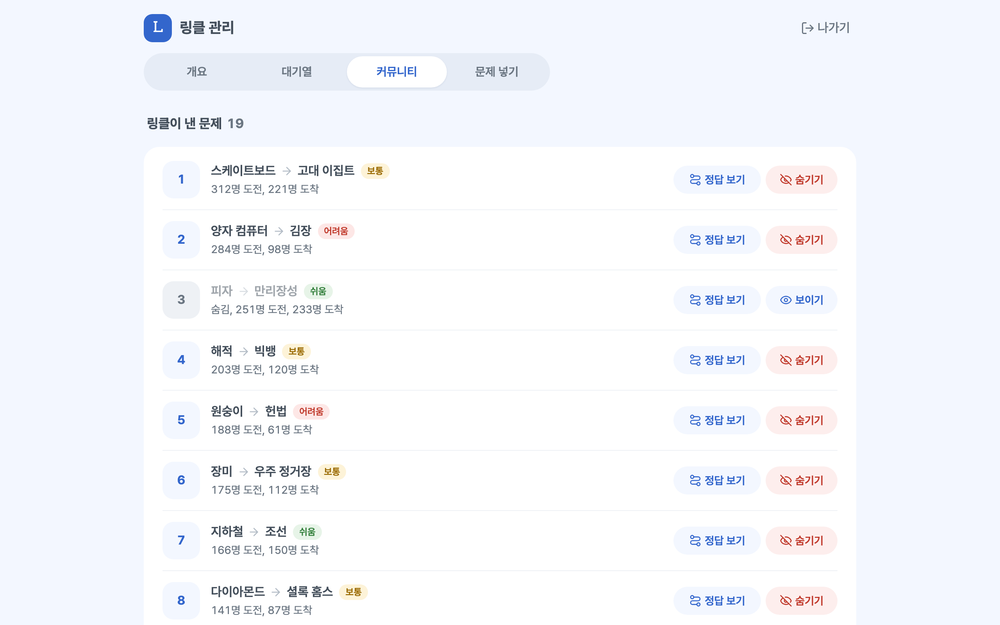
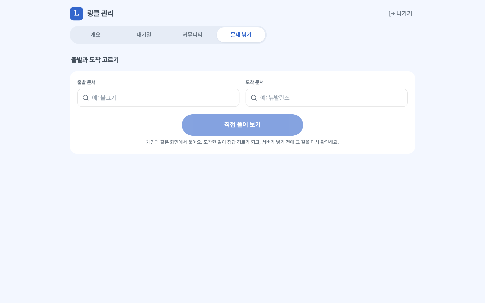
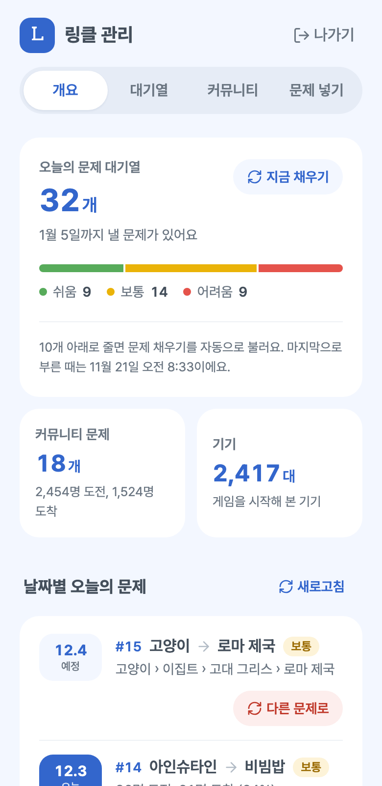

관리자 화면을 열면 "오늘 볼 것"과 "어느 날 무엇이 나가는지"가 먼저 보이게 해요
지금 관리자 화면은 데이터 종류(개요, 대기열, 커뮤니티)로 나뉘어 있어서, 운영자가 매일 하는 일(내일 문제 확인, 새로 들어온 문제 훑어보기, 어제 결과 보기)을 탭 사이를 오가며 맞춰야 해요. 대기열을 날짜 칸에 펼치고, 첫 화면 맨 위에 할 일을 두는 쪽으로 다시 그렸어요. 아직 구현 전이고, 화면 속 문제 이름과 숫자는 예시예요(오늘을 12월 3일로 두었어요).
첫 화면은 "오늘"
맨 위 할 일 줄, 오늘과 내일 문제, 최근 14일 도착률을 한 화면에 둬요. 난이도 예상이 맞았는지도 여기서 보여요.
대기열은 "일정"으로
남은 문제를 나갈 날짜 칸에 펼치고, 하나를 고르면 옆에서 두 문서 설명과 정답 경로를 보며 괜찮아요 또는 빼기로 훑어봐요.
지금 정해 둔 것은 그대로
평면 단색과 브랜드 파랑, 비밀번호로 들어오기, 대기열이 10개 아래면 문제 채우기를 자동으로 부르기, 위험한 일은 두 번 눌러 확인하기.
관리자 화면을 데이터 종류로 나눌지, 운영자의 하루로 나눌지가 갈림길이에요
쓰는 사람은 운영자 한 명이고, 하루에 한두 번 휴대폰이나 노트북으로 열어요. 하는 일은 대부분 "내일 문제가 괜찮은지 보고, 새로 들어온 문제 중 이상한 것을 뺀다"예요. 셋을 그려 봤고, A를 추천해요.
할 일 줄, 오늘과 내일, 날짜 칸 일정
핵심 한 수 · 대기열을 나갈 날짜 칸에 펼쳐요. "2번째"가 아니라 "12월 6일 일요일"로 보여요
좋은 점
- 내일 이후가 날짜로 보여 이상한 문제가 언제 나가는지 바로 알아요
- 훑어보기를 일정 안에서 해요. 따로 배울 화면이 없어요
대가
- 예상 날짜는 출제 때 경로 확인에서 빠지면 하루씩 밀려요. "예상"이라고 꼭 적어야 해요
- 출제 순서 계산을 브라우저에도 둬야 해요
선례 · Buffer 대기열 슬롯 · Shopify 홈 할 일 · Linear 트리아지(B에서 빌림)
새로 들어온 문제를 한 장씩 넘기기
핵심 한 수 · 40개가 들어오면 받은편지함처럼 하나씩 판단해요
좋은 점
- 훑어보기가 가장 빨라요. 단축키 두 개로 끝나요
대가
- 한 달에 한 번 쓰는 화면이 첫 자리를 차지해요
- 어느 날 나가는지는 여전히 안 보여요
선례 · Linear 트리아지 · YouTube 댓글 검토
탭 넷 그대로, 표와 메뉴로 정리
핵심 한 수 · 줄마다 있던 빨간 단추를 ⋯ 메뉴로 넣어요
좋은 점
- API와 데이터를 바꾸지 않아 하루면 끝나요
대가
- 날짜를 모르는 문제와 할 일이 없는 첫 화면은 그대로예요
선례 · Vercel 배포 목록. 이 정리는 A의 1단계로 함께 들어가요
화면은 깔끔해졌지만, 운영자가 매일 하는 판단은 아직 머릿속에서 해야 해요
main(5b97d3c)을 빌드해 가짜 API로 띄워 찍었어요. 12월 3일, 대기열 32개, 그중 18개를 아직 안 본 상태예요. 숫자는 다 있지만 "그래서 오늘 무엇을 봐야 하는지"와 "어느 날 무엇이 나가는지"를 화면이 말해 주지 않아요.

1256
345
7
8
9- 첫 화면이 오늘 할 일을 말하지 않아요. 대기열 수와 기기 수는 있지만, 새로 들어온 문제를 봐야 하는지, 내일 문제는 괜찮은지는 운영자가 탭을 돌며 판단해요. Admin.tsx — OverviewTab, QueueSummary
- 앞으로 나갈 날은 내일 하루만 보여요. 날짜별 목록 8줄 중 6줄이 지난 날이에요. 모레부터는 대기열 탭을 보고 짐작해야 해요. worker/src/admin.ts — overview(): date >= today−6
- 대기열의 번호는 실제로 나가는 순서가 아니에요. "2 마라톤 → 오로라"지만 주말에는 어려움이 먼저 나가서 실제로는 12월 9일에 나가요. 번호를 믿고 "다음 문제"를 판단하면 틀려요. schedule.ts — wantedDifficulty, chooseOrder · Admin.tsx — QueueTab {i + 1}
- 자동으로 들어온 문제를 훑어본 흔적이 남지 않아요. 32줄이 모두 같은 모양이라 어디까지 봤는지 몰라요. 문서가 무엇인지(설명)도 없어 제목만 보고 민감한 소재인지 판단해야 해요. 설계 문서 7.6은 "자동으로 들어온 문제는 관리자 화면에서 훑어보고 뺀다"고 적었어요. docs/DESIGN.md 7.6 · Admin.tsx — QueueTab
- 빨간 단추가 줄마다 있어요. 대기열 32줄에 "빼기"가 32개이고, 개요 맨 위 줄에서 가장 눈에 띄는 것도 빨간 "다른 문제로"예요. 가장 드물게 할 일이 가장 크게 보여요. Admin.tsx — RowButton tone="danger" · ConfirmButton
- 결과가 문장으로만 있어 날짜끼리 비교가 안 돼요. "96명 도전, 61명 도착 (64%)"이 줄마다 있지만, 쉬움 날 89%, 어려움 날 48%처럼 난이도 예상이 맞았는지는 직접 세어야 해요. 설계 문서 7.4는 이 값으로 난이도 기준을 고쳐 간다고 했어요. Admin.tsx — OverviewTab sub · DESIGN.md 7.4
- 커뮤니티 목록은 정렬도 비교도 안 돼요. 도착률이 없고, 숨긴 문제가 목록 사이에 흐리게 섞여 있어요. 줄마다 단추가 둘이에요. Admin.tsx — CommunityTab
- 문제 넣기는 고른 뒤에야 문제를 알려 줘요. 최근 30일에 쓴 문서인지는 출제할 때 서버가 건너뛰며 알게 되고, 화면은 넓은 빈자리로 남아요. schedule.ts — 최근 30일 건너뛰기 · Admin.tsx — AddTab
- 휴대폰에서는 줄이 두 배로 길어져요. 단추가 제목 아래로 내려가 8일을 보려면 세 화면을 내려야 해요. Admin.tsx — Row(sm 미만에서 단추 줄바꿈)
첫 화면 맨 위 한 줄이 오늘 해야 할 일을 말해요
지금은 숫자 카드 세 장과 지난 날 목록이었어요. 맨 위에 할 일 줄을 두고, 그 아래 오늘과 내일을 나란히, 그 아래 최근 14일 도착률을 난이도 색으로 그려요. 운영자가 여는 이유 셋(볼 것이 있나, 내일은 괜찮나, 난이도가 맞았나)에 위에서부터 답하게 했어요.
안 본 문제 18개11월 21일 문제 채우기로 들어왔고, 가장 빠른 것은 12월 6일에 나가요
훑어보기보통 날 평균 71%보다 조금 낮아요
안 본 문제 18개11월 21일 문제 채우기로 들어왔고, 가장 빠른 것은 12월 6일에 나가요
훑어보기보통 날 평균 71%보다 조금 낮아요
- 할 일 줄 — 볼 것이 있을 때만 나타나요. 안 본 문제, 문제 채우기 실패, 대기열 부족처럼 운영자가 움직여야 하는 것만 한 줄씩 쌓여요. 아무 일도 없으면 줄이 사라져 "오늘은 볼 것이 없다"는 것 자체가 답이 돼요. Shopify 홈의 할 일 묶음에서 가져왔어요.
- 오늘 카드 — 도착률 옆에 같은 난이도 날의 평균. 64%만으로는 잘 된 건지 알 수 없어요. "보통 날 평균 71%"를 붙여 오늘 문제가 예상보다 어려웠는지 바로 읽혀요.
- 내일 카드 — 정답 경로를 펼친 채로. 아직 아무도 시작하지 않은 문제라 정답을 숨길 이유가 없어요. "다른 문제로"는 빨강을 빼고, 지금처럼 두 번 눌러야 바뀌어요.
- 최근 14일 도착률 — 막대 색이 그날의 난이도. 초록 막대가 높고 빨강 막대가 낮으면 난이도 예상이 맞은 거예요. 오른쪽에 난이도별 평균을 적어 7.4의 기준을 고칠 때 근거로 써요.
- 남은 문제 — 날짜로 말해요. "32개"보다 "1월 5일까지"가 운영자에게 필요한 답이에요. 문제 채우기 상태는 할 일이 생길 때만 맨 위 줄로 올라가요.
남은 문제가 "몇 번째"가 아니라 "어느 날"로 보여요
지금 대기열은 1부터 32까지 번호가 붙지만, 실제 출제는 요일 난이도에 따라 순서가 바뀌어요. 서버의 출제 규칙을 브라우저에서 그대로 돌려 각 문제에 예상 날짜를 붙이고, 하나를 고르면 옆 패널에서 두 문서 설명과 정답 경로를 보며 훑어봐요. 넓은 화면에서는 목록과 패널이 나란히, 휴대폰에서는 아래에서 올라오는 시트로 열려요.
월드컵
국제축구연맹이 4년마다 여는 남자 축구 국가대표 대회. 1930년 우루과이에서 처음 열렸다.
미적분
미분과 적분을 함께 이르는 수학 분야. 뉴턴과 라이프니츠가 따로 세웠다.
빼면 12월 6일에는 해리 포터 → 상대성 이론이 나가요
월드컵
국제축구연맹이 4년마다 여는 남자 축구 국가대표 대회. 1930년 우루과이에서 처음 열렸다.
미적분
미분과 적분을 함께 이르는 수학 분야. 뉴턴과 라이프니츠가 따로 세웠다.
빼면 12월 6일에는 해리 포터 → 상대성 이론이 나가요
- 날짜 칸 — 정해진 날과 예상한 날을 글자로 구분해요. 내일(12.4)은 이미 붙은 문제라 "정해짐", 그 뒤는 서버와 같은 규칙(요일 난이도, 당긴 문제 먼저, 최근 30일 문서 건너뛰기)으로 계산한 "예상"이에요. Buffer가 대기열 글을 다음 빈 칸에 자동으로 넣는 방식과 같아요.
- 훑어보기 필터와 파란 점. 안 본 문제에만 점이 붙고, "안 본 문제 18"을 누르면 그것만 날짜순으로 남아요. 괜찮아요를 누르면 점이 사라지고 다음 안 본 문제로 넘어가요.
- 두 문서 설명 — 제목만으로 판단하지 않게. 고른 문제의 출발과 도착 문서 첫 줄을 위키백과에서 받아 보여요. 민감한 소재, 동명이인, 너무 낯선 주제를 여기서 걸러요.
- 빼면 무엇이 바뀌는지 한 줄로. "빼면 12월 6일에는 해리 포터 → 상대성 이론이 나가요"처럼 결과를 먼저 보여 줘요. 빼기는 되돌릴 수 있어 두 번 누르지 않아요.
- 단축키 — 한 손으로 끝까지. J/K로 다음과 이전, Y는 괜찮아요, X는 빼기예요. Linear 트리아지의 1/2 단축키에서 가져왔어요. 휴대폰에서는 시트의 큰 단추가 같은 일을 해요.
커뮤니티는 숫자를 비교하는 표가 돼요
지금은 줄마다 문장 한 줄과 단추 둘이었어요. 도전과 도착률을 열로 세워 정렬하고, 숨긴 문제는 따로 모으고, 숨기기는 줄 끝 ⋯ 메뉴로 넣어요. 운영자가 여기서 하는 일은 "너무 쉽거나 어려운 문제 찾기"와 가끔 숨기기라서, 비교가 먼저예요.
| 번호 | 문제 | 난이도 | 도전 | 도착률 | |
|---|---|---|---|---|---|
| 1 | 스케이트보드고대 이집트 | 보통 | 312 | 71% | |
| 2 | 양자 컴퓨터김장 | 어려움 | 284 | 35% | |
| 4 | 해적빅뱅 | 보통 | 203 | 59% | |
| 5 | 원숭이헌법 | 어려움 | 188 | 32% | |
| 6 | 장미우주 정거장 | 보통 | 175 | 64% | |
| 7 | 지하철조선 | 쉬움 | 166 | 90% | |
| 8 | 다이아몬드셜록 홈스 | 보통 | 141 | 62% | |
| 9 | 축구베토벤 | 쉬움 | 133 | 91% | |
| 10 | 소금달 착륙 | 어려움 | 120 | 31% |
| 번호 | 문제 | 난이도 | 도전 | 도착률 | |
|---|---|---|---|---|---|
| 1 | 스케이트보드고대 이집트 | 보통 | 312 | 71% | |
| 2 | 양자 컴퓨터김장 | 어려움 | 284 | 35% | |
| 4 | 해적빅뱅 | 보통 | 203 | 59% | |
| 5 | 원숭이헌법 | 어려움 | 188 | 32% | |
| 6 | 장미우주 정거장 | 보통 | 175 | 64% | |
| 7 | 지하철조선 | 쉬움 | 166 | 90% | |
| 8 | 다이아몬드셜록 홈스 | 보통 | 141 | 62% | |
| 9 | 축구베토벤 | 쉬움 | 133 | 91% | |
| 10 | 소금달 착륙 | 어려움 | 120 | 31% |
- 보이는 문제와 숨긴 문제를 나눠요. 숨긴 문제가 목록 사이에 흐리게 섞이지 않아요. YouTube 댓글 검토의 두 탭 구조와 같아요.
- 도착률 열 — 막대와 숫자를 함께. 35%와 91%가 한눈에 갈려요. 열 머리를 누르면 그 값으로 정렬해요.
- 숨기기는 ⋯ 메뉴 안에. 메뉴에 "목록에서 빠져요. 순위표와 기록은 남아요"를 적어, 누르기 전에 결과를 알게 해요. Vercel 배포 목록의 줄 메뉴에서 가져왔어요.
문제 넣기는 고르는 순간 걸리는 것을 알려 줘요
지금은 두 입력칸과 빈 화면이었고, 최근에 쓴 문서인지는 출제 때 서버가 건너뛰며 알게 됐어요. 세 단계를 위에 보이고, 문서를 고르면 그 아래에 설명과 경고를 바로 붙이고, 오른쪽에 좋은 문제의 조건(설계 문서 7.1)을 둬요.
2직접 풀어 보기
3넣을 곳 고르기
국화과의 한해살이풀. 여름에 해를 닮은 큰 노란 꽃이 핀다.
기원전 27년부터 지중해 둘레를 다스린 고대 로마의 제정 시기.
로마 제국은 12월 4일 문제의 도착이에요. 최근 30일 안에 쓴 문서라 오늘의 문제로는 1월 3일부터 나갈 수 있어요.
같은 출발과 도착의 문제는 아직 없어요.
도착한 길이 정답 경로가 되고, 서버가 넣기 전에 그 길을 다시 확인해요.
- 두 문서 모두 많은 사람이 아는 주제
- 최소 3번은 눌러야 닿아요
- 4번 안에 가는 길이 있어요
- 출발과 도착의 주제가 가깝지 않아요
- 날짜, 목록, 사건, 살아 있는 사람이 아니에요
자동 출제가 지키는 조건과 같아요.
12월 2일에 대기열 맨 앞으로, 12월 5일 예상
11월 29일, 커뮤니티 19번
11월 27일, 커뮤니티 18번
2직접 풀어 보기
3넣을 곳 고르기
국화과의 한해살이풀. 여름에 해를 닮은 큰 노란 꽃이 핀다.
기원전 27년부터 지중해 둘레를 다스린 고대 로마의 제정 시기.
로마 제국은 12월 4일 문제의 도착이에요. 최근 30일 안에 쓴 문서라 오늘의 문제로는 1월 3일부터 나갈 수 있어요.
같은 출발과 도착의 문제는 아직 없어요.
도착한 길이 정답 경로가 되고, 서버가 넣기 전에 그 길을 다시 확인해요.
- 두 문서 모두 많은 사람이 아는 주제
- 최소 3번은 눌러야 닿아요
- 4번 안에 가는 길이 있어요
- 출발과 도착의 주제가 가깝지 않아요
- 날짜, 목록, 사건, 살아 있는 사람이 아니에요
자동 출제가 지키는 조건과 같아요.
12월 2일에 대기열 맨 앞으로, 12월 5일 예상
11월 29일, 커뮤니티 19번
11월 27일, 커뮤니티 18번
- 세 단계를 위에. 고르기, 직접 풀어 보기, 넣을 곳 고르기 중 어디에 있는지 보여요. 풀다가 돌아와도 길을 잃지 않아요.
- 고른 문서 아래에 첫 줄 설명. 검색 목록에서 본 설명이 고른 뒤에도 남아, 동명의 다른 문서를 고르지 않았는지 다시 확인해요.
- 최근 30일 경고 — 고르는 순간. 이미 있는 관리용 API(
/api/admin/used)로 최근에 쓴 문서를 받아 바로 알려요. 넣는 것을 막지는 않고, 언제부터 나갈 수 있는지만 적어요. - 좋은 문제의 조건을 곁에. 자동 출제가 지키는 조건과 같은 기준을 사람이 넣을 때도 보게 해요.
휴대폰에서는 줄에 단추를 두지 않고, 누르면 시트가 올라와요
지금은 줄마다 단추가 아래로 내려가 한 줄이 두 배였어요. 줄은 날짜, 문제, 난이도만 한 줄로 두고, 누르면 아래에서 시트가 올라와 설명과 단추를 보여 줘요. 8일이 한 화면에 들어와요.
오늘
안 본 문제 18개
훑어보기보통 날 평균 71%보다 조금 낮아요
고양이 › 이집트 › 고대 그리스 › 로마 제국
- 할 일 줄이 맨 위. 휴대폰에서 열자마자 볼 것이 있는지 알 수 있어요.
- 남은 문제는 날짜로. 오늘과 내일 카드 아래에 "1월 5일까지"만 두고, 커뮤니티와 기기 수는 휴대폰에서 빼요.
일정에서 하나를 누른 순간
- 줄은 한 줄 높이. 날짜, 문제, 난이도만 두고 단추를 빼서 8일이 한 화면에 들어와요.
- 시트에 설명과 두 단추. 괜찮아요와 빼기가 엄지 닿는 아래에 있어요. 시트를 내리면 목록으로 돌아가요.
새 색 없이, 지금 관리자 화면의 부품과 값으로 그렸어요
격자 · 여백
| 칸 | 값 |
|---|---|
| 페이지 | 최대 1120(지금 960) · 좌우 24 · 휴대폰 16 |
| 머리 · 탭 | 머리 56 · Segmented 520 · 탭 40 · 위에 붙음(지금과 같음) |
| 카드 | Card 흰 바탕 · 모서리 20 · 안쪽 20/24 · 카드 사이 16 |
| 줄 | Row 위아래 12 · 구분선 #eef1f5 · 고른 줄 바탕 --color-secondary |
| 날짜 꼬리표 | DateBadge 64×48(휴대폰 56×44) · 모서리 14 |
| 일정 패널 | 넓은 화면 목록 1fr + 패널 420 · 1024 아래에서 시트 |
글자 · 색
--color-ink-2--color-primary--color-s4 쉬움 · --color-s3 보통 · --color-s1 어려움새로 필요한 부품: 할 일 줄, 도착률 막대, 문서 설명 카드, 단축키 표시, 떠 있는 메뉴, 단계 표시, 아래 시트. 모두 기존 토큰(바탕, 잉크, 파랑, 난이도 색)으로만 그렸어요.
구현할 때 지킬 것
화면 말 대응표
관리자 화면도 코드 이름을 쓰지 않아요.
| 내부 말 | 화면 |
|---|---|
puzzle_queue (approved) | 남은 문제 · 일정 |
status = 'rejected' | 뺀 문제 |
priority > 0 | 당김 |
par | 정답 n번 |
kind = 'official' | 링클이 낸 문제 |
reviewed_at(새 칸) | 본 문제 · 안 본 문제 |
workflow_dispatch | 문제 채우기 |
규칙
wantedDifficulty와 chooseOrder를 packages/core로 옮겨 Worker와 화면이 함께 써요. 두 곳에 따로 쓰면 언젠가 날짜가 어긋나요.puzzles에 있는 날)만 "정해짐"이에요.참고한 제품과 문서
날짜 칸 · 일정
- Buffer · Setting up your timezones and posting schedules — 대기열 글이 가장 이른 빈 칸으로 자동 배정되고, 날짜를 직접 정한 글만 따로 표시하는 방식. 일정 탭의 "예상 / 정해짐"으로 가져왔어요. 칸 편집 화면은 하루 한 문제라 가져오지 않았어요.
- Buffer · How to use Buffer's calendar feature — 월 보기와 끌어서 옮기기는 휴대폰에서 다루기 어려워 가져오지 않았어요.
- Hootsuite · Manage your content calendar in the mobile app (2026-11) — 하루 보기에 발행된 것과 예약된 것을 함께 두는 방식. 오늘 탭의 오늘·내일 카드로 가져왔어요.
훑어보기 · 할 일
- Linear · Triage — 새로 들어온 것만 모으는 곳과 받아들이기/거절 두 동작, 숫자 단축키. 안 본 문제 필터와 Y/X 단축키로 가져왔어요. 중복 표시와 미루기는 운영자 한 명에게 필요 없어 뺐어요.
- Shopify · Shopify Home — 첫 화면 맨 위에 종류별로 묶인 할 일과 건수. 할 일 줄로 가져왔어요. 돌아가며 바뀌는 추천 카드는 가져오지 않았어요.
- Stripe · Dashboard home page charts — 지표 옆에 비교 기준을 두는 방식. 도착률 옆 "같은 난이도 날 평균"으로 가져왔어요. 위젯 꾸미기는 지표가 적어 뺐어요.
목록 · 메뉴
- Vercel · Managing Deployments (2026-09) — 위험한 동작을 줄 끝 ⋯ 메뉴에 넣고 잃는 것을 한 줄로 알리는 방식. 커뮤니티의 숨기기로 가져왔어요. 필터 네 종은 문제 수가 적어 뺐어요.
- YouTube · Moderate comments — 보이는 것과 보류한 것을 두 탭으로 나누는 방식. 커뮤니티의 보이는 문제 / 숨긴 문제로 가져왔어요.
레포 안의 근거
docs/DESIGN.md7.1 · 7.4 · 7.5 · 7.6 · 7.7 — 좋은 문제의 조건, 난이도 기준과 보정, 출제 규칙, 자동 문제를 훑어보고 빼는 일, 지금 관리자 화면의 기능.apps/worker/src/schedule.ts— 요일 난이도, 당긴 문제 먼저, 최근 30일 건너뛰기. 예상 날짜 계산의 근거.- 못 연 문서: Reddit 검토 대기열, Later 일정 안내(둘 다 접근 거부). 근거로 쓰지 않았어요.
데이터를 바꾸지 않는 정리부터, 새 칸이 필요한 훑어보기는 마지막에 올려요
나눠 올릴 순서
packages/core로 옮기고 예상 날짜를 붙여요. Worker 동작은 바뀌지 않고, 시험으로 두 곳이 같은 날짜를 내는지 고정해요.puzzle_queue.reviewed_at(마이그레이션 0005)과 "괜찮아요" 동작, 위키백과 설명, 단축키. 문제 채우기로 들어온 문제는 안 본 상태로 들어와요.